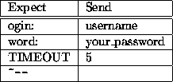
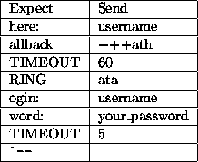

In order to be able to connect via modem using the PPP protocol, you need to create a PPP device. To do that just open the Network Configurator, press and then . Select the interface and press . Almost all the fields will be automatically filled, you just need to specify the telephone number and the connection script (I'll not treat the PAP authentication, your ISP will hopefully provide you with all the information you need). The connection script is a tricky point, specially if you are using a callback system. If you are not using a callback system, let us suppose the connection prompts are these:
Connection Software Version 3.0 xxxx login: username Password: your_passwordin this case the script should look like this:

Ê
If you use a callback system and if the callback software prompts are like the following:
Callback Software Version 3.0
Where: username
Callback in a few seconds: modemXYZ on line102 ...
then the script needs to be a little longer:

Ê
To activate the connection just select in the Network Configurator the
ppp0 interface and press .
Check if the connection
has been successfully established typing ping
111.222.333.444 in a shell window, where 111.222...is the IP of
your name server. To check the connection I prefer using pppload, a
nice application which shows you in a xload-style the connection
activity.